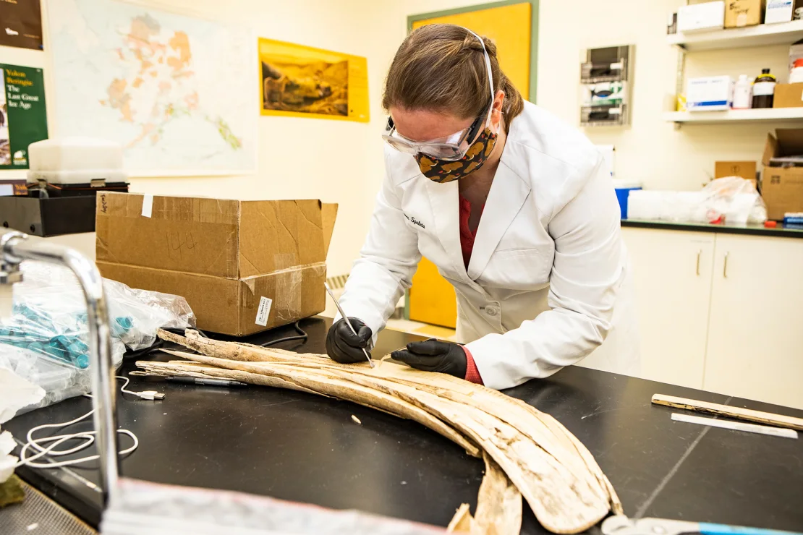

A 14,000-year-old tusk offers clues about the relationship between early Alaskans and woolly mammoths
(CNN) - Early human settlements in what is now Alaska tracked closely with the movements of a female woolly mammoth that lived 14,000 years ago, according to a new study. The animal ranged about 620 miles (1,000 kilometers) from northwestern Canada to interior Alaska during her lifetime.
The revelation sheds light on the relationship between the prehistoric giants and some of the first people to make their way across the Bering Land Bridge, suggesting that humans set up their seasonal hunting camps where woolly mammoths were known to gather.
Researchers from the United States and Canada established the connection between the two species thanks to a new tool for isotope analysis, an ancient tusk and a map of archaeological sites in Alaska. The tusk belonged to a woolly mammoth later named Élmayųujey’eh or, for short, Elma. The specimen was discovered in 2009 at the Swan Point archaeological site in central Alaska.
The research began, said lead author Audrey Rowe, a doctoral student at the University of Alaska Fairbanks, after the arrival of a “cutting-edge,” high-precision tool at the institution’s Alaska Stable Isotope Facility that breaks down samples to analyze strontium isotopes — chemical traces that reveal details of an animal’s life.
Rowe’s adviser, Matthew Wooller, used the same method to identify the movements of an adult male mammoth for a paper published in August 2021. Wooller is the study’s senior study author, a professor at the university’s College of Fisheries and Ocean Sciences, and the director of the isotope facility.
Strontium is a stable isotope created when the mineral rubidium, an extremely reactive metal, breaks down. It’s a slow process with a half-life of 4 billion years, Rowe said. As rubidium breaks down, it first turns to radiogenic strontium 87 and, many years later, stable strontium 86.
Out where the mammoths roamed, the rocks broke down into soil, plants grew, the animals ate those plants, and their tusks displayed the strontium level within their diet in each layer of ivory.
Woolly mammoth tusks grew at a consistent daily rate, with the earliest days of the animal’s life recorded in the tip of the tusks. The layers are clearly visible when a tusk specimen is split lengthwise.
That analysis can then be tracked to the mineral and strontium levels of rocks around Alaska to map where Elma had roamed.
“The US Geological Survey has done a pretty darn good job mapping rocks in Alaska,” Rowe said.
Then Wooller suggested the team overlay the local archaeological site locations on top of Elma’s movements.
“And lo and behold,” Rowe said, “you had a lot of overlap between the densest area of archaeological sites in Alaska from the late Pleistocene right on top of areas that Elma, our mammoth, was using during her life.”
The new isotopic data joins data sets created from radiocarbon and DNA analysis of two related juvenile mammoths also found at Swan Point to create a fuller picture of life 14,000 years ago.
“She was a young adult in the prime of life. Her isotopes showed she was not malnourished and that she died in the same season as the seasonal hunting camp at Swan Point where her tusk was found,” Wooller said in a statement.
Other researchers agreed. “This study significantly advances our understanding of mammoth behaviour, and also provides interesting clues regarding the interaction between humans and mammoths,” said Love Dalén, professor of evolutionary genomics at the Centre for Palaeogenetics in Stockholm, Sweden, via email. Dalén was not involved in the new research.
The revelations could also spur more scientists to look for new combinations of research tools to advance their understanding of science and history.
“Overall, I think the paper is a fantastic example of how the use of a combination of different molecular tools, such as isotope, DNA and radiocarbon analyses, can provide groundbreaking and novel insights into prehistory,” Dalén said.
The findings were published Wednesday in the journal Science Advances.
Changing the picture of hunter-gatherers
The new evidence advances more than an understanding of the early relationship between woolly mammoths and humans.
“(Elma) wandered around the densest region of archaeological sites in Alaska,” Rowe said in a statement. “It looks like these early people were establishing hunting camps in areas that were frequented by mammoths.”
The research also upended what Rowe, the lead researcher, thought should be the image that comes to mind when thinking about each of the species independently.
The study team commissioned natural history illustrator Julius Csotonyi to create a digital image of the two species. The final image includes all three woolly mammoths found in the Swan Point area, but instead of depicting the humans as aggressive hunters surrounding their prey, Rowe insisted that the artist feature a family instead.
“These people were just like us, but we only ever see the aggressive hunting times of their lives,” she said. Hunter-gatherers had to use “complicated” technology to kill mammals to survive “and it really required a lot of skill.”
Rowe wanted the image, which includes a woman, a man and children watching the mammoths, to demonstrate that “these people were spending tons of time teaching their children how to do everything.”
Jenna Schnuer is an Anchorage, Alaska-based freelance writer, editor and audio producer who focuses (mostly) on science, art and travel.